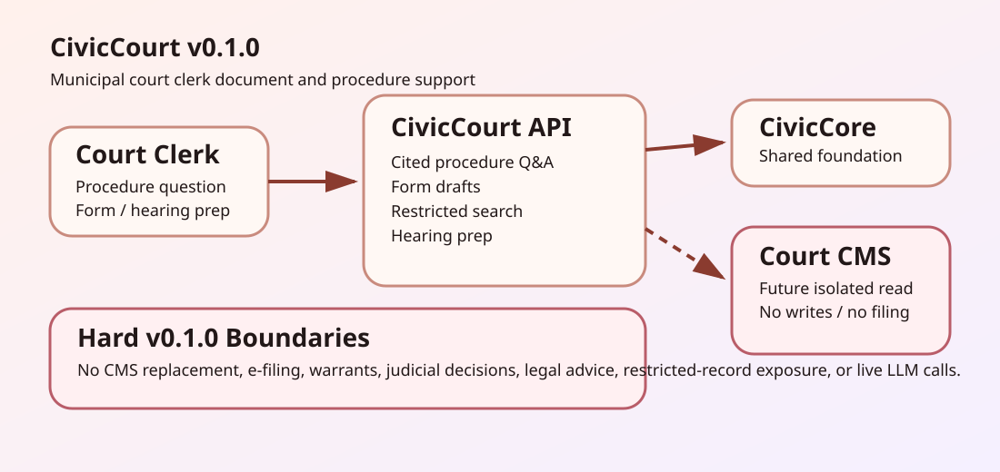

For Clerks
Draft procedure answers, forms, and hearing prep checklists that a clerk verifies before use.
Townlight Courts v0.1.2 is a published foundation label under suite-wide release-recovery review. It helps municipal court clerks answer procedure questions with citations, draft forms, persist optional local workpapers, protect persisted retrieval with bearer roles, search public sample records, and prepare hearing checklists.
Draft procedure answers, forms, and hearing prep checklists that a clerk verifies before use.
FastAPI runtime pinned to the Townlight Core v0.4.0 release wheel, optional persistence with CIVICCOURT_WORKPAPER_DB_URL, retrieval auth via CIVICCOURT_AUTH_TOKEN_ROLES, deterministic tests, and no court CMS writes.
Restricted records are hidden in the sample search contract, persisted retrieval needs allowed bearer roles, and sealed or juvenile matters are not exposed.

Townlight Courts v0.1.2 does not replace court case management, issue warrants, file documents, decide cases, provide legal advice, call live LLMs, or integrate with court CMS systems.
Recovery evidence: read the release-recovery status.
Repository: github.com/CivicSuite/civiccourt